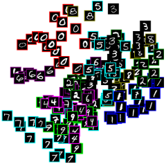

AUTO-ENCODING MNIST

Click for interactive demo
- What is the input and output of the network?
- Draw the architecture
- What happens as you play with it?
- How do the different hyperparameters (e.g., learning rate) affect performance?
- Design challenge: visualize it!
- How does changing the architecture affect performance (e.g., depth, size of conv kernel, number of filters)?
- What’s going on with the activations in the last layers?
- How does the layout of MNIST images change as the network trains? Does anything surprise you?
- How does it change with different layers and neurons on each layer?
- Design challenge: how could you visualize the change in representation over time and/or between layers and neurons?